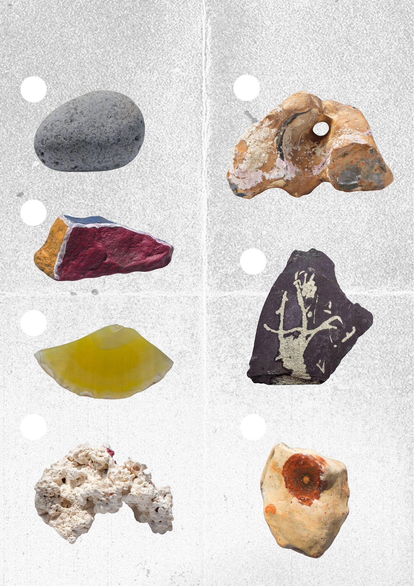

MOOWS / Issue 01 · August 2026
The stories of stones

Match each stone to its story and write the correct number in the circle beside it.
Tear out this page and keep it safe until Nowhere / Elsewhere. Bring your completed page to Mooncows Camp and, if your answers are correct, claim your prize: a unique collection of stones from the Playa Museum of Stones. One prize only. Geological expertise not required.
01.
I have always kept the company of limpets and other small forms of marine life. But I remember an older companionship, too — the people who crossed what would one day become the English Channel in search of a better life. Back then, there was no channel. You could walk across.
02.
I have always considered myself perfectly ordinary. Smooth, grey, unremarkable. Of all the stones she could have chosen, I still don’t know why she chose me. Since then, I have served faithfully as a paperweight.
03.
I’m not entirely sure I belong in this collection. Unlike the others, I still remember being alive.
04.
My second life began in a London warehouse.
From there, I moved to a garden, where I spent my days among the courgettes.
05.
She was looking for the right medium for her message when she found me lying on a pavement in a small village at the foot of Kinder Scout. Apparently, I was the one.
06.
For thousands of years, your kind kept picking up my kind. First to cut things. Then to make fire.
Then to fire guns. These days, you mostly just call us pretty.
07.
For most of my life, I looked much like any other stone. Then water found a way in. It carried a little iron with it, and time did what time does best. The mark grew slowly, layer by layer, until it became part of me. Humans call it iron staining. I’ve always thought of it as a birthmark.